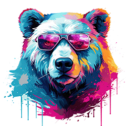

The Many Sides of Color
The Basics
The basics start with the hub of all color, the traditional color wheel.
The wheel has Primary, Secondary, and Tertiary Colors. These are our most vivid colors.

- Primary colors: Red, Blue, and Yellow are pure colors, or they are not formed by mixing.
- Secondary colors: Green, Violet, and Orange are colors formed by equally mixing primary colors.
For example, Violet is a 50/50% mix of Blue and Red. Can you guess the rest using the color wheel? - Tertiary colors: Are created by equally mixing a primary with a secondary.
Color Emotion

Colors can evoke emotion. But be careful, as there are influences that can result in an unexpected response.
The mood of a color can be complex; it is influenced by many factors, such as:
- Age: Child, teenager, Elder, do they all react the same?
- Culture: In Eastern society, Gray can signal help; the same color in a Western culture
may be dull and ignored. Eastern brides wear red; Western brides prefer white. Research first! - Situation: Blue may be your favorite go-to color, wonderful for a new dress,
but not so good for illustrating fresh food. - A Color's Physical Properties:Color Hue, saturation, or Lightness reflect the intensity
and purity of a color. These factors may also influence its emotional response.
Knowing the target audience and using color purposefully are important.
It helps to test color selections with their target audience before deployment.
Color Terms

Color is described with terms such as Hue, Saturation, and Brightness.
- Hue: is the purest form of color.
The most vivid hues are the Primary, Secondary, and Tertiary colors discussed earlier. - Saturation: refers to the intensity of a color.
Fully saturated is the pure vivid color; muted saturation is grayed ot duller. - Brightness: is light reflectance, showing as light or dark (black-0% brightness).
The HSB (Hue, Saturation, Brightness) color palette can be used in design tools like Photoshop to create digital designs.
Terms often referred to in relation to color also include:
- Shades: refer to a base hue + black mixed, used to increase darkness
- Tints: are a hue + white, used to increase lightness
- Tones: are a hue + gray, used to reduce colorfulness
Color Impact
Color comes in a wide variety. Knowing how to select color can be a challenge;
it is important to first consider the final design use:
- Digital: websites, digital advertising will use an RGB color model.
Also, a website needs to consider CSS styling. - Print: published materials like brochures, posters will use a CMYK color model.
- Art: can use either model and may break a few rules,
depending on the realist or abstract approaches. - Interior Design: is likely to lean towards printed matter,
but the design psychology will be more personal.
Photoshop is a great tool for evaluating color. Pressing F6 or selecting Windows/Color opens the color tool.
This tool lets you view all media types and even provides a warning about safe colors in print and digital.
It is important to pay attention to print warnings to ensure the design sent to a printer will come back in
the colors you select. The digital warning really applies to older technology;
depending on your audience, you may be able to ignore it.
Web Design Themes
One tool that can be particularly useful in designing a website color palette is Colorspire.com (https://colorspire.com/)

To understand how this site works, there are a few terms we need to understand for color Grouping:
- Analogous: Groups 3-5 colors next to each other on the color wheel, usually one
is dominant, the other support or accent. The effect is a natural, cohesive palette. - Monochromatic: Uses various shades, tones, and tints of a single hue.
This approach is widely used to emphasize form, structure, and contrast without distracting color. - Triadic: This is three colors evenly spaced around the wheel.
This offers a vibrant, high-contrast design. - Complementary: Opposites on the color wheel, often dynamic and energetic,
but too much can overwhelm. - Split Complementary: Instead of selecting the direct opposite, it splits to either
side to find potential accents, and it tones down a Complementary design. - Tetradic: Also called the double Complementary, as it selects two pairs of complementary colors.
This is a very vibrant design, but it can be a challenge to manage.
To use the site, start with a base color; it suggests options from there and shows example designs for each palette type.
Note that you only want to select about 3-5 colors, based on the design you have envisioned.
What is nice about this site is that it rates colors within a palette for accessibility, comparing them to a black/white type set.
This helps with WCAG (Web Content Accessibility Guidelines) compliance and with meeting many global accessibility regulations
for many disabilities. Another good site for guidance on Contrast is Adobe (https://color.adobe.com/create/color-contrast-analyzer).
You can set a background color and a text color to assess whether there is sufficient contrast.
Note to always be cautious with pure reds and greens for colorblind users.
Learn More
About color Palettes: Link to Themes
Visit our Insights page to find more articles: >
Link to Insights Page
Color website layout article: Color Explosion or Not: > Link to Article
Contact us at: tcgrowth@outlook.com